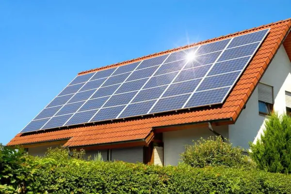

Energias
A Ilha verde e os seus habitantes são conhecidos pelo seu estilo de vida ecológico. A região Honiro não é diferente, tendo todas as suas fontes de energia vindas de meios sustentáveis.
Energia Solar
A energia solar provem da luz e do calor do Sol, é utilizada por meio de diferentes tecnologias em constante evolução, como o aquecimento solar, a energia solar fotovoltaica.
Energia da Biomassa
Obtida a partir da combustão de matéria orgânica sólica (neste caso cana de açúcar que é cultivado intensamente em Honiro. O calor libertado é utilizado para gerar vapor que é encaminho para turbinas permitindo a produção de eletricidade .
Estão colocadas 2 centrais de biomassa, capazes de produzir energia para até 50 habitações.
Energia das Ondas
O movimento das ondas e das correntes aciona uma turbina que gera energia.
Estão colocadas 20 boias, capazes de produzir energia para até 20 habitações
Éolica
O movimento das pás aciona uma turbina que permite produzir eletricidade.
Estão colocadas 4 éolicas que produz energia suficiente para 30 habitações.